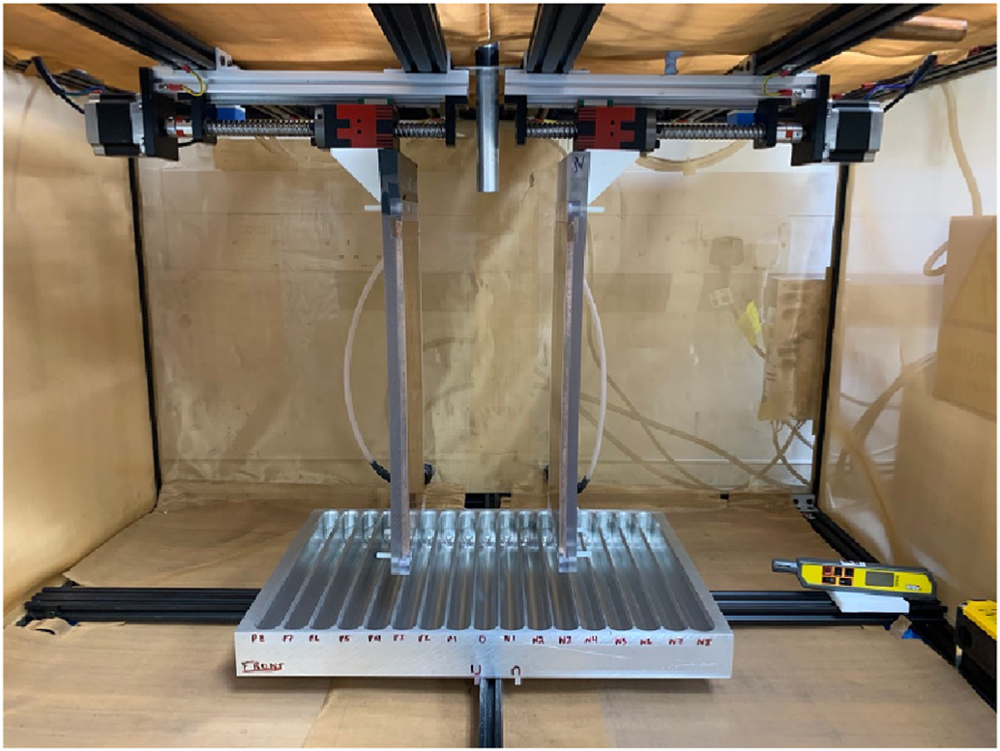
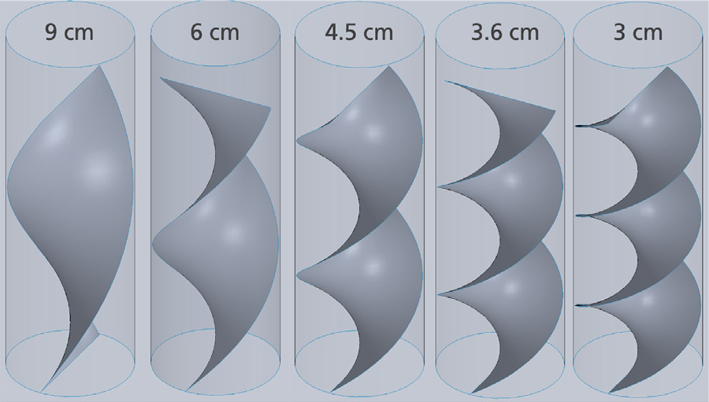
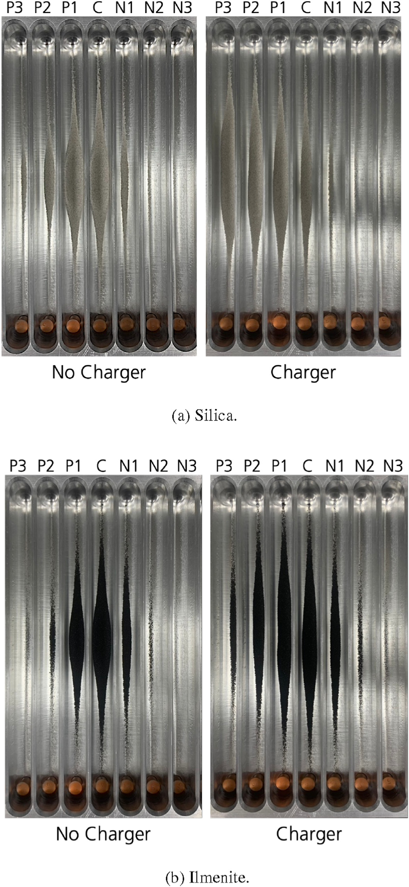

Characterise & test
Connect material measurements with a focused experimental programme.
 Dr Joshua RaseraMineral Processing & Resource Systems
Dr Joshua RaseraMineral Processing & Resource SystemsUse differences in particle behaviour to enrich a mineral fraction.
My work connects material characterisation, tribocharger design and separator experiments with the choices needed for practical dry beneficiation.

The path a particle takes through a tribocharger changes the contacts it experiences. Those contacts influence the charge it acquires.
My PhD investigated tribocharging through modelling and experiments. In discrete element modelling, I examined particle contacts to inform tribocharger design, then evaluated an optimised design in a free-fall electrostatic separator.
Under terrestrial test conditions, pure silica and ilmenite acquired negative and positive charge respectively. The tribocharger changed their motion through the electric field. In JSC-1 simulant, increased density in some collectors indicated enrichment of denser constituents.
The useful result is the connection between charger design, particle charging and measurable separation behaviour, with performance evaluated for pure minerals, binary mixtures and a more complex simulant.

Two minerals. Different charges. Where will they land?
Contact can give grains an electric charge. Between charged plates, that charge changes how they fall. Try collecting the copper-coloured ilmenite grains while leaving the blue silica grains behind.
Make a prediction: will stronger voltage always give you a better separation?
Click a grain in the separator, or choose “Inspect a grain”. The animation pauses so you can look closely.
Grain symbols enlarged; horizontal spread magnified.
Field: 233 kV/m
Assigned mean charges appear here.
Choose your settings, then release the grains. Each run uses the same starting sample for a fair comparison.
Each grain has a diameter, density, mass and assigned electric charge. Its trajectory follows Newton’s second law: gravity, electric force F = qE, and spherical-particle drag in still air. Vacuum removes drag. Buoyancy is included in air.
The field is uniform between the plate ends and zero outside them. Field strength is the total voltage difference divided by the 150 mm gap. The model’s plates are 500 mm tall, followed by a 100 mm free-fall region. The three collectors span 240 mm; the centre collector is 50 mm wide. The inlet is 50 mm above the plates, with a downward speed of 0.4 m/s.
Motion is integrated with a 1 ms time step. Electrode contact stops a grain and is counted separately from useful product. Grains that miss the collectors are counted too. Flight calculations use metres, seconds, kilograms and coulombs. In the collectors, enlarged non-rotating disks settle under gravity, inelastic contact impulses and sliding friction at a fixed 1/240 s step. This separate, display-scale 2D contact model is illustrative: it does not predict real grain packing or alter which collector receives a grain. The pile does not feed back into the dilute flight model.
This begins at the charger’s outlet. It does not simulate contact electrification inside a tribocharger. At 200 µm and 100% charger output, the assigned mean charge-to-mass ratios are +2.2 µC/kg for ilmenite and −5.0 µC/kg for silica. With variation enabled, the reference standard deviations at 200 µm are 3.0 and 4.0 µC/kg, respectively; diameters range from 85% to 115% of the selected size. These distributions are illustrative and are not fitted experimental data.
Mineral densities are 4,570 and 2,650 kg/m³. Charge signs follow the broad behaviour discussed in the 2023 experimental study, but depend on materials and conditions. Each grain keeps its charge during flight. For each grain, total charge scales with its actual diameter, q ∝ d; mass scales as d³, so q/m ∝ 1/d². This is an illustrative constant-potential approximation, anchored at 200 µm. The more general saturation relationship in Cruise et al. (2022), equation (5) is σ = σF + ε₀φ/r, giving both d² and d contributions to total charge. Its material parameters are not fitted here; humidity, electrical breakdown and charging-surface adhesion limits are not modelled. Air and gravity change flight forces, while this assigned charging law remains the same.
This is a dilute, two-dimensional trajectory model with spherical grains. The flight model omits grain–grain forces and collisions, irregular shapes, fringe fields, image forces, adhesion and charge leakage. Grains are stopped at first plate contact; sticking or bouncing is not resolved. Changing gravity and atmosphere explores the assigned-charge model, not validated lunar separator performance.
Physics: electric force and uniform fields · Schiller–Naumann spherical drag. Air at approximately 20°C: density 1.204 kg/m³ and dynamic viscosity 1.825 × 10⁻⁵ Pa·s. No experimental recovery or purity is predicted.
The paper compares collector distributions with and without the tribocharger. These photographs show the pure silica and pure ilmenite tests, rather than an applet output.
The charging and free-fall sequence above explains the idea. The published experiment establishes what happened in the tested apparatus and conditions.
Read the experimental paper ↗
A substantial strand of my work concerns terrestrial dry mineral processing: connecting material properties to separation performance and practical process choices.
I work across characterisation, experimental investigation, performance analysis and flowsheet development. The questions extend beyond whether a separator works: what feed does it suit, how sensitive is it to conditions, and how does it fit into the whole process?
Particle size, mineral associations, texture and physical properties inform which separation mechanisms are plausible. I connect characterisation evidence with the design and interpretation of processing tests.
My experience spans evaluating dry separation options, including magnetic, electrostatic and density-based methods, and understanding their role alongside size classification and feed preparation.
Moisture and environmental conditions matter to dry processing. I investigate how material conditioning and changing feed properties influence behaviour, so that a technology is assessed in the conditions it needs to operate.
Connect material measurements with a focused experimental programme.
Use mass balances, partition behaviour and grade-recovery relationships to examine what a process is doing.
Compare classification, separation, recirculation and blending scenarios as connected process choices.
Bring recovery, product quality, resource needs and economic assumptions into the same discussion.
The aim is to make better use of mineral resources while reducing reliance on water and understanding the wider consequences of a processing choice.
Discuss a dry-processing challenge ↗Related lunar work examines sustainable pre-filtration, electrostatic and cyclonic dust control, and dust hazards in habitats. Managing the fine fraction connects processing, material handling and the systems people must operate.